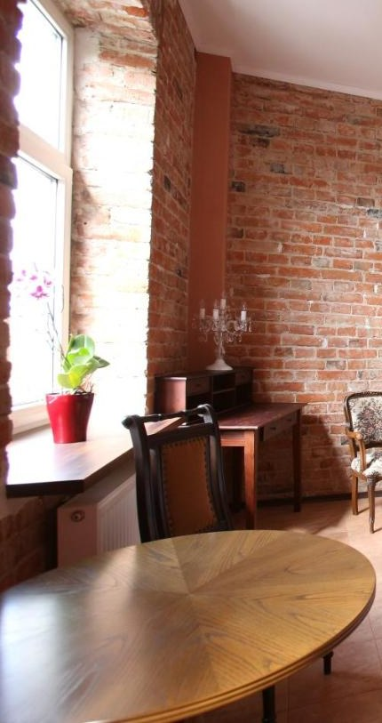
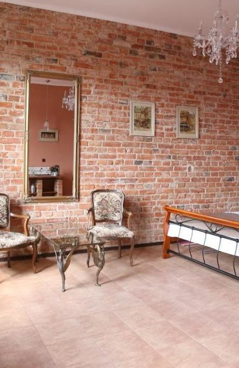
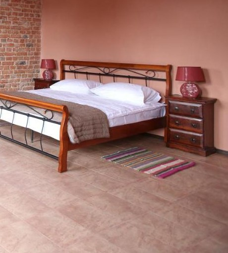

Apartament 02 · studio · 40 m²

Apartament 02 · studio · 40 m²
Tę ścianę odsłonięto podczas remontu i nikt nie miał serca jej zatynkować. Wypalona cegła ciągnie się przez całe studio, łapie ciepłe światło z dwóch okien i odbija się w lustrze ujętym w złotą ramę. Antyczne fotele, świecznik, sekretarzyk - rzeczy z różnych epok, które w tej kamienicy nagle pasują do siebie. To apartament dla dwojga, którzy przyjeżdżają do Płocka po klimat, nie po kolejny pokój hotelowy. Rano kawa z „Pierwszej Kawy" na dole, wieczorem deptak Tumska dwa kroki dalej.
Apartament Ceglany, parter kamienicy - kadr z porannego światła.



To podgląd jednego z dziewięciu - każdy kolejny ma własny kolor i własną historię.